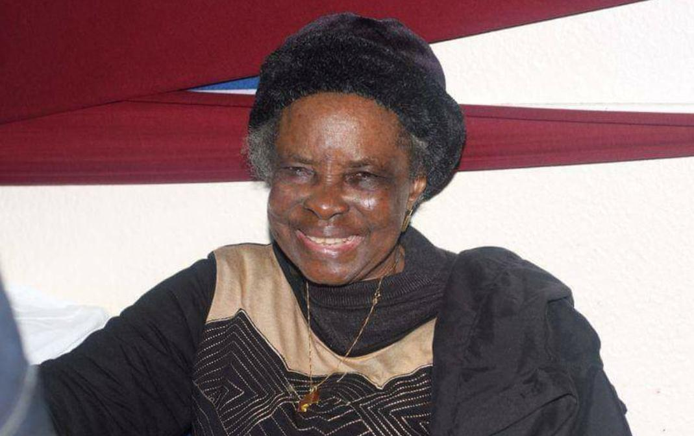

Life History of Victoria Aderonke Joose Adegbite (Nee Olasinde)
Victoria Aderonke Joose was born to the family of Late Pa. Solomon Oguntunji Olasinde and Late Mama Elizabeth Olatorera Asabi Olasinde on 18th February 1933 at Olowologa Compound, Idi- Agbon Oke-Aree, Iree in Boripe Local Government Area, State of Osun. Victoria Aderonke had her early education at Baptist Day School, Oke Aree, Iree from 1944-1951. She proceeded to Abeokuta early in 1952 for her midwifery course at the then Macotta Nursing Training Centre, till 1954.
On graduation, Aderonke worked at Baptist Hospital, Ogbomoso and later at Local Authority Maternity Centre Iragbiji, from where she got employed by the then Northern Nigerian Government and was posted to the General Hospital in Offa. While working at the General Hospital in Offa, she met and started dating Emmanuel Adebisi Adegbite who was working as a Staff Nurse in the same hospital. After a while, she returned to her local government in the then Oyo State (now Osun State) and she was posted to Iragbiji near Ikirun. Though she parted physically with Emmanuel, the love between them continued to grow from strength to strength and they later got married. As a result of their marriage, Aderonke returned to Offa to live with her husband and she was re-appointed at General Hospital, Offa as a Midwife. Within a few years, they were blessed with two children, Bolanle and Adewale (of blessed memory). In March 1960, Emmanuel got admission to the Sefton General Hospital in Liverpool, United Kingdom for further studies. A year later in 1961, Aderonke got admission to study nursing also in Sefton General Hospital, Liverpool, United Kingdom. Thereafter Aderonke qualified as a State Registered Nurse and State Midwife and Emmanuel qualified as a State Registered Nurse in the UK, they both returned to Nigeria. Aderonke started working as a Nursing Sister in Wusasa Mission Hospital, Zaria, while Emmanuel went to Ahmadu Bello University, Zaria to study law. On completion of Emmanuel’s law degree, he was appointed by the Northwestern State if Nigeria and posted to Minna, now in Niger State. Aderonke moved to Minna in 1970 and joined the General Hospital, Minna as a Nursing Sister. After years of selfless service in Northern Nigeria, the family moved to Ilorin in Kwara State where Aderonke joined Kwara Polytechnic Medical Centre and rose to the position of a Chief Nursing Matron before she retired from active service. After retirement, Aderonke dabbled into small businesses to keep her busy. She has a provision store and then a Chemist, but as a selfless person she gave away most of her stock to people who couldn’t afford them. She continuously travelled to the UK, USA and Nigeria to visit her children and families there and obtained her British Citizenship during this period. She carried out charitable activities in the UK and was involved in numerous church and community activities there. Aderonke surrounded herself with her children, grandchildren, families and friends throughout her life. She answered her divine appointment to the Lord on the 10th of April 2014. It is impossible to talk about Aderonke without talking about her love and service to the Lord. She was a trailblazer, a woman of impeccable integrity, absolute humility, kindness that knew no boundaries, wisdom of the Lord, joy that knew no limit and contentment. She never questioned God regarding any portion of her life and saw the testimonies of all the tests that came her way. She lived a fulfilled and grateful life with the unfailing love of all who truly loved and adored her. She called on the Lord at all times and the Lord never once failed her. We have joy in the knowledge, that she is resting in the Lord, while watching over her beloved ones till we meet to part no more in Jesus’ name. Amen Aderonke is survived by her children, grandchildren and gray grand children. May her gentle soul rest in perfect peace in Jesus’ name. Amen